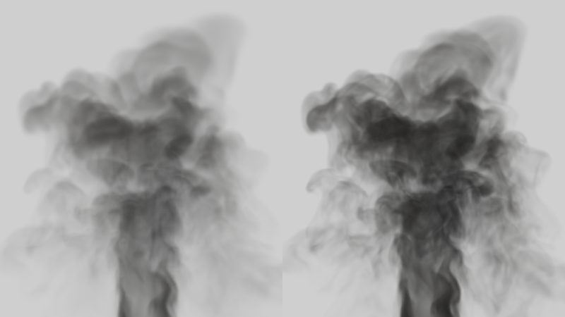

可以通过多种方法增加 Aero 和燃烧模拟的细节。
source_air 节点上设置的 fluid_detail_size 确定可以解析的气流的最小细节大小。减小此值可提高模拟的分辨率。
source_air 上另一个影响细节大小的设置为 geo_volume_mode。如果此项设置为 Absolute，则细节大小采用世界单位，这意味着大发射器生成的体素比小发射器生成的体素多。如果其设置为默认值 Relative，则在使用大发射器和小发射器的模拟中，体素数量大致相同。
您还可以减小 source_air 节点上的 geo_detail_size，以及 collider 节点上的 detail_size，以提高发射和碰撞的精确度。
请注意不要将细节大小减小太多，尤其是在 Absolute 模式下。体素太多会显著增加需要的内存和计算时间。
如果模拟过于平滑，需要增加细节，那么将 aero_refinement_settings 节点连接到 aero_solver_settings 节点的 additional_settings 可能是成本相对较低的方式。
使 sharpening_amount 保持较低值。增加 sharpening_radius 可获得更加清晰的结果，但如果值较高，则计算时间会增加。
aero_sharpening_settings 节点上的 boost_detail_with_points 选项用于向模拟添加粒子。这可以减少扩散并提供更加详细的结果，但需要使用更多内存，计算时间也会增加。

post_refine_aero 节点可以在模拟后增强 Aero 效果的细节。它仍需要原始 Aero 源和碰撞对象，但也可以应用于文件缓存。
通常，它比将 aero_refinement_settings 节点连接到 aero_solver_settings 的 additional_settings 端口更快，但是额外的细节不会反馈到模拟中。
将 Aero 模拟的结果插入 post_refine_aero 节点的 aero_volume 端口。
根据需要设置 refinement_levels。高优化级别需要较长的时间进行计算，并且可能会产生瑕疵。
连接原始模拟中的 Aero 源和碰撞对象。这将告知节点可以添加和不能添加细节的位置。
从头到尾播放场景。请注意，即使细化缓存的文件，也必须按顺序播放帧。